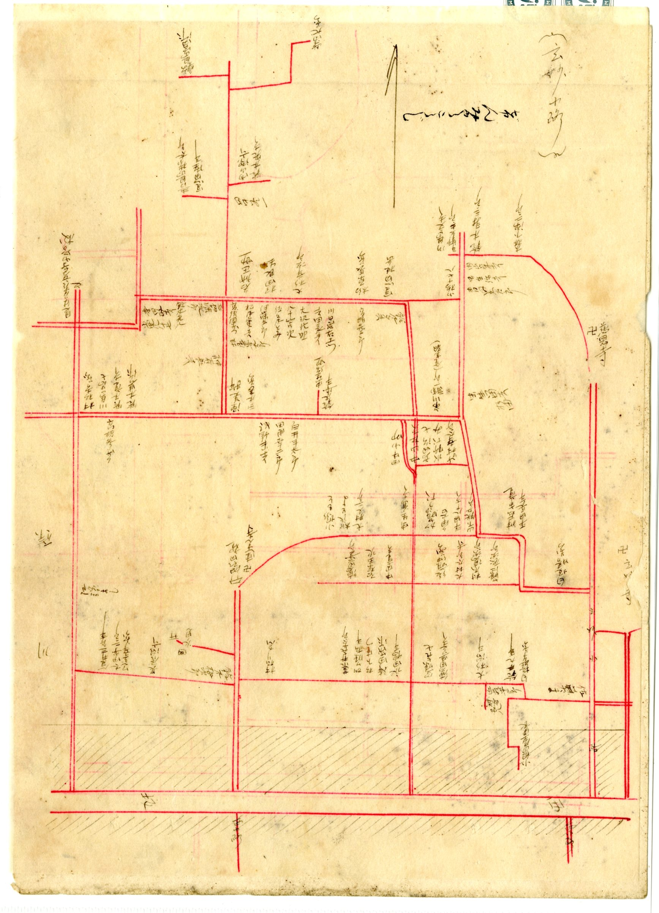
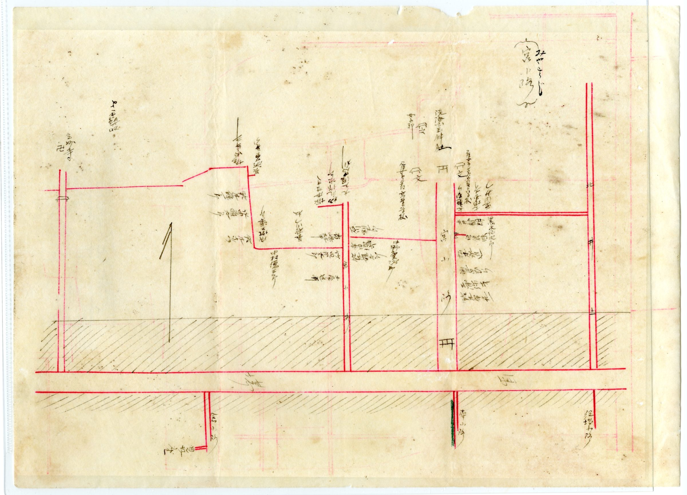

THE CORE地図に記された、町の中枢
明治四十二年の見付には、磐田郡役所が置かれていました。郡の行政を担う役所が町の中にあったということは、見付がこの地域の中心地だったことの何よりの証です。あわせて、土地や建物の権利を記録する登記所、ものを生み出す製造所も地図に記されています。行政・経済・記録のしくみが、すでにこの町に揃っていたのです。
こうした施設は、町に人と情報を引き寄せます。役所や登記所に用がある人が行き交い、その周りに商いが生まれ、暮らしが厚みを増していく。地図に残る密度の高い家並みは、こうした中枢があったからこそのものでした。

TEMPLES & LEARNING寺と神社、そして学びの町
地図には、玄妙寺・大見寺・見性寺をはじめ、数多くの寺院(卍)と神社が記されています。「玄妙小路」「宮小路」といった町名が、それぞれ寺や神社へ向かう道に由来していることからも、寺社が町の骨格をつくってきたことがわかります。人々の信仰と暮らしが、道のかたちそのものに刻まれているのです。
学びの場もありました。地図に記された学校に加え、見付には、現存する日本最古級の木造擬洋風校舎として知られる旧見付学校も残っています。行政、信仰、教育――暮らしを支える核がひととおり揃っていたことが、見付という町の厚みを物語っています。

BEYOND THE NUMBERS土地の価値は、面積や築年数だけでは測れない
こうして見てくると、土地の価値が、面積や築年数だけでは測れないことがよくわかります。その場所がどんな歴史を持ち、どんな人の流れの中にあったのか。役所や寺社、商いの中心にどう近かったのか。町の成り立ちを知ることは、その土地を正しく理解し、正しく扱うための第一歩です。
私たちが磐田市見付の不動産に向き合うとき、坪単価の前にこうした背景を読み解こうとするのは、そのためです。地域を知らずに数字だけを並べても、その土地の本当の姿には届きません。
地域を知ることは、不動産を正しく扱う第一歩である。
その土地の歴史まで、丁寧に。
富士ヶ丘サービスは、磐田市見付という土地を、坪単価だけでは見ていません。相続した家・空き家・古い土地について、地域の成り立ちまで踏まえてご相談に乗ります。まずは土地の状況を一緒に整理するところから始めましょう。